×
WGSN frames SS27 dresses as the womenswear growth engine — the largest, most stable category, reset around versatility, comfort and expressive design. The structural move is away from body-conscious toward soft architectural volume: trapeze and drop-waist column rise as heatwaves push airflow up the priority list, while bodycon declines. Four directions carry the newness — soft-volume trapeze, eclectic-resort boho, pretty-feminine prairie, and a BaRock / dark-romance craft story — across a sun-drenched, expressive palette anchored by Luminous Blue (WGSN Colour of the Year), statement reds and Power Pastels.
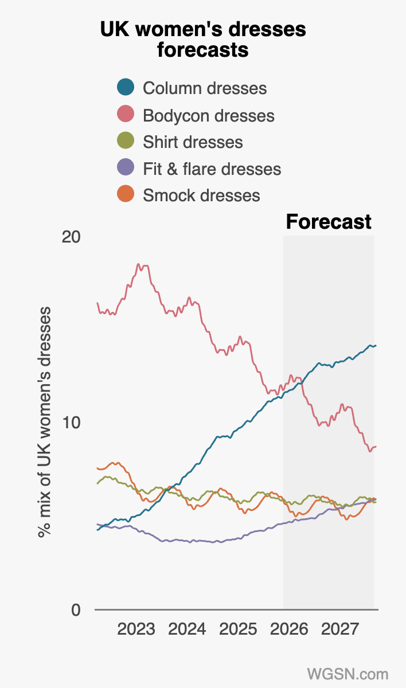
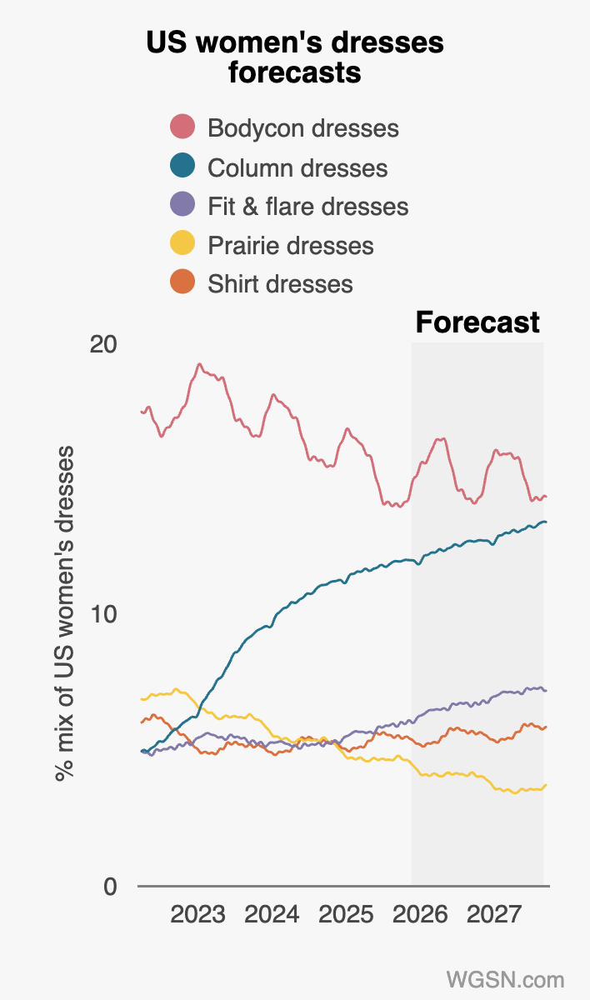
Read: Column dresses are the clear growth driver in both markets — rising to the top of the UK mix (~14–15%) and closing fast on bodycon in the US (~5%→~13%). Bodycon is in structural decline, sharply in the UK. Fit & flare builds gently; prairie softens in the US. Catwalk/social proof: shirt styling +7.5ppt, #HalterNeck +2.4ppt, #SlipDress +1.4ppt (S/S 26 vs S/S 25). Net: invest in volume and column, transition out of bodycon.
Pantone values are nearest TCX references for direction — confirm against physical chips before lab-dip approval. Full colour/fabric/trim sourcing tables are at the foot of this report.
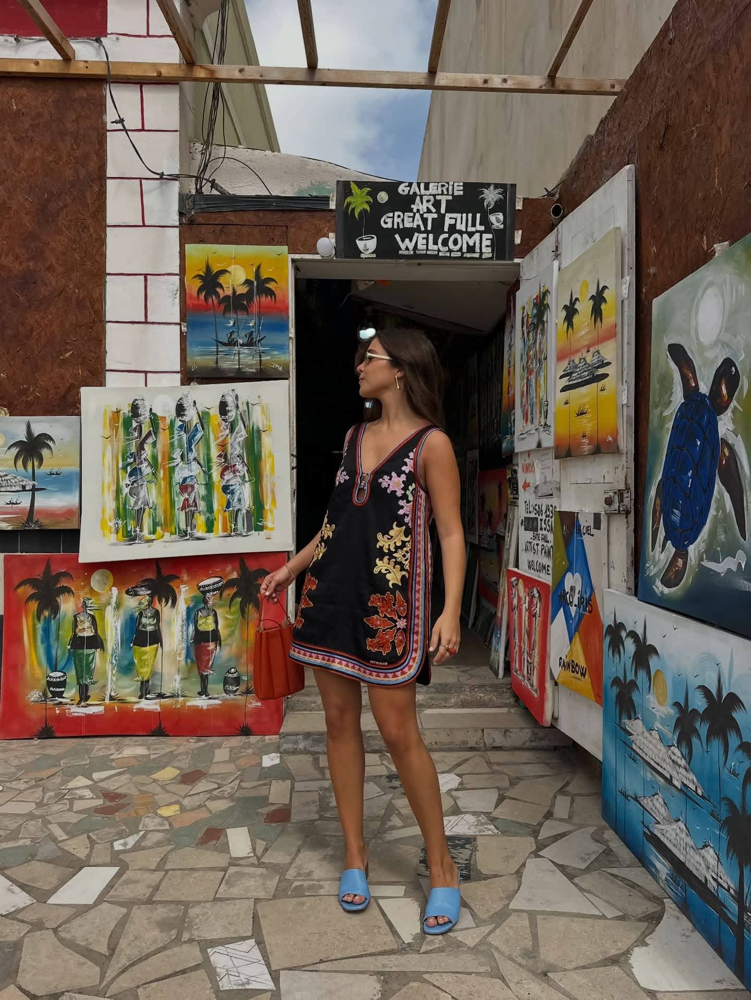
WGSN · key item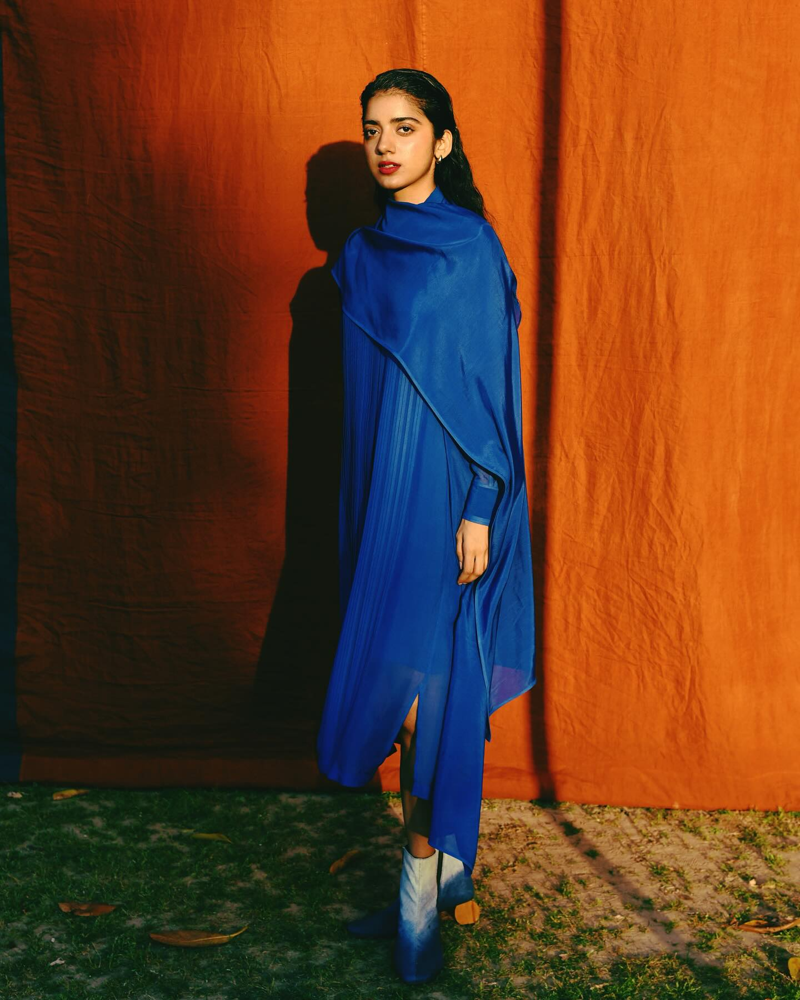
WGSN · catwalk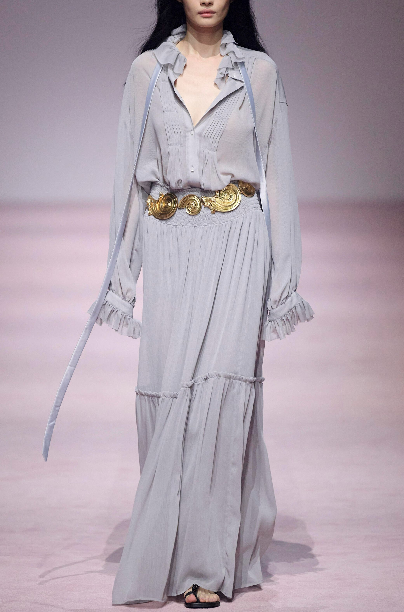
WGSN · catwalk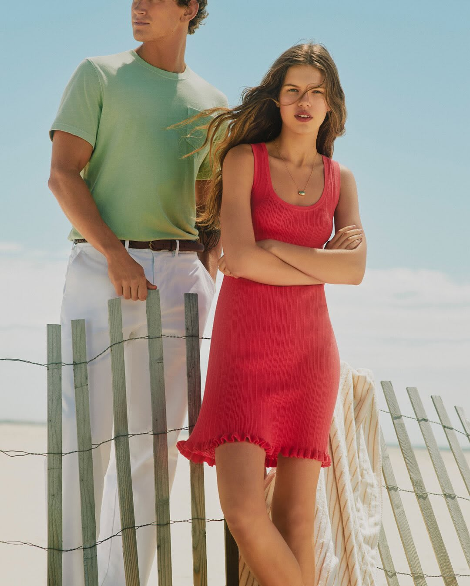
WGSN · retail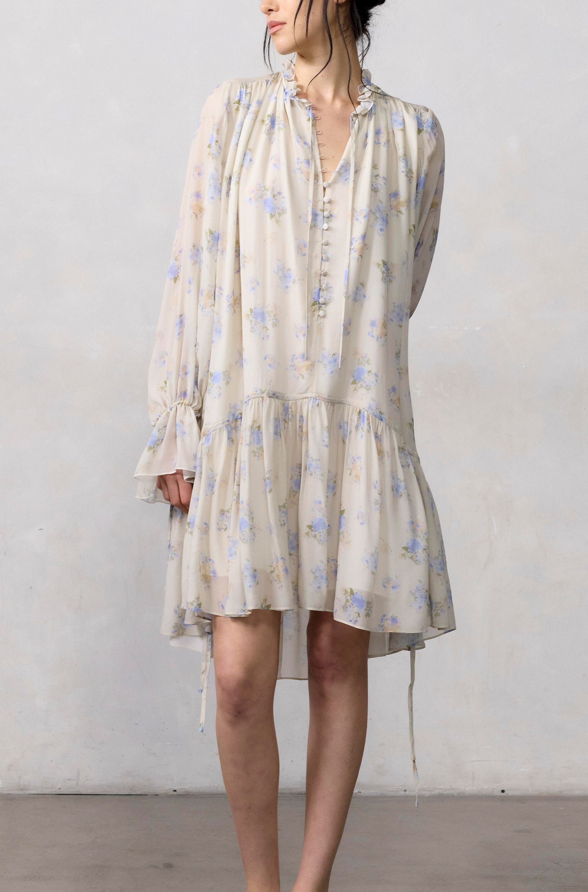
Created by YSL in 1958 as a break from Dior's cinched waist, the trapeze swings away from the body for an unencumbered feel — re-emerging now as bodycon recedes and airflow becomes a priority. Its reference is 1960s mod (floral, eyelet, shift).
The revival rides the 60s-gamine mood feeding boho (Jean Seberg, not Woodstock), so it reads "counterculture with a bit more class" and crosses into contemporary resort.
A standout Summer 2026 silhouette blending 1920s flapper ease with a modern elongated line, rendered broadly — bubble-hem minis, floor-sweeping shapes, crisp white maxis, smocked versions.
FW26–27 runways confirm it: Chanel belted drop-waist to stretch the torso, Ferragamo used georgette & pleating for a long fluid line — the treatment seen in this Luminous-Blue column.
The season's structural bet, and the one the data backs: as bodycon declines, the trapeze mini and drop-waist column rise. Architectural yet easy — sculptural shapes that maximise movement, sit across generations, and read as newness without losing commerciality.
V-neck shoulder-led swing mini; no waist seam; contrast folk-embroidered border; sleeveless.
Cotton voile, 100% cotton, 90–110 gsm (crisp, airy). Alt: cotton poplin 110–130 gsm.
Multi-needle schiffli placement embroidery (neck→hem); self bias binding 12mm; YKK invisible zip CB.
Luminous Blue 18-4148; Butter 12-0721.
High cowl drape; sunray micro-pleat column; asymmetric high-low hem; long sleeve option.
Poly chiffon 40–60 gsm / georgette 60–80 gsm, sunray-pleated.
Permanent sunray pleating (Surat pleaters); self bias binding; concealed zip.
Luminous Blue 18-4148 (COTY).
Sheer pintucked shirt-bodice + gathered tiered maxi skirt; statement metal belt at waist.
Viscose / poly georgette 60–80 gsm (sheer, fluid); pintuck panel.
Pintucks; ruffle cuff; metallic scroll belt (zamak/brass); waist shirring.
Nimbus grey / Whisper White 11-0507.
Scoop neck; fine-rib A-line swing mini; lettuce/merrow ruffle hem; sleeveless.
Cotton-elastane rib 180–220 gsm (soft stretch).
Lettuce/merrow edge; self-bind neck.
Statement Red / coral 18-1664.
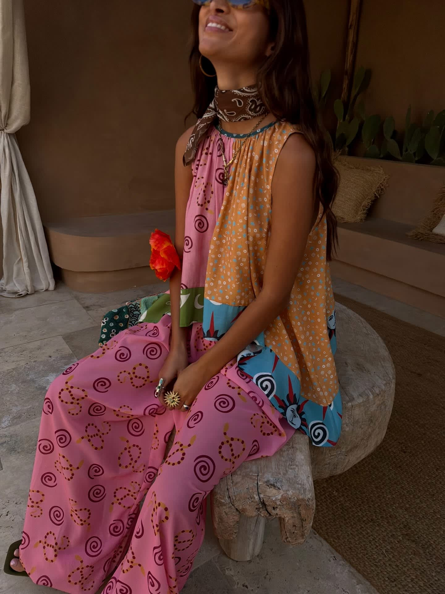
WGSN · key item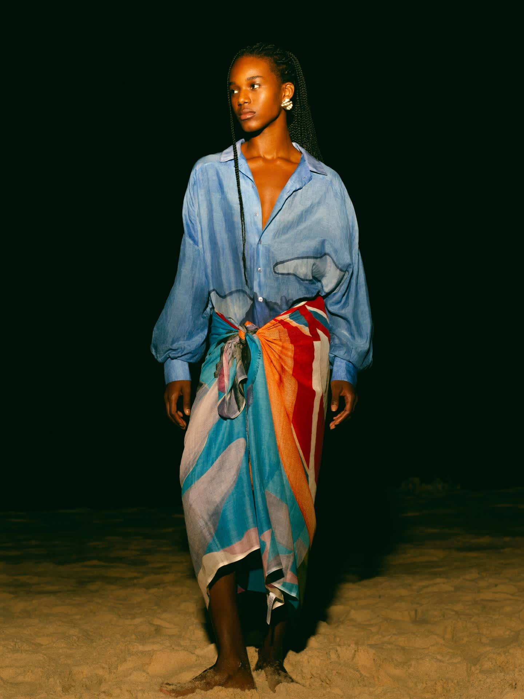
WGSN · key item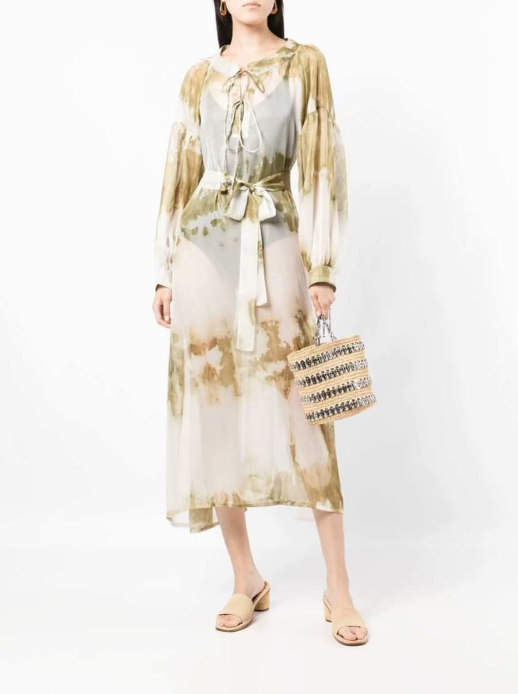
WGSN · retail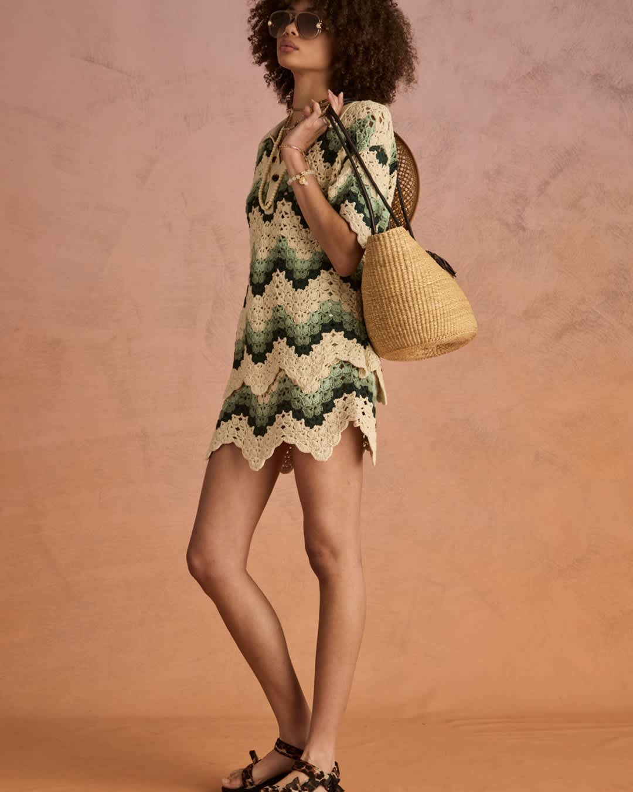
WGSN · retail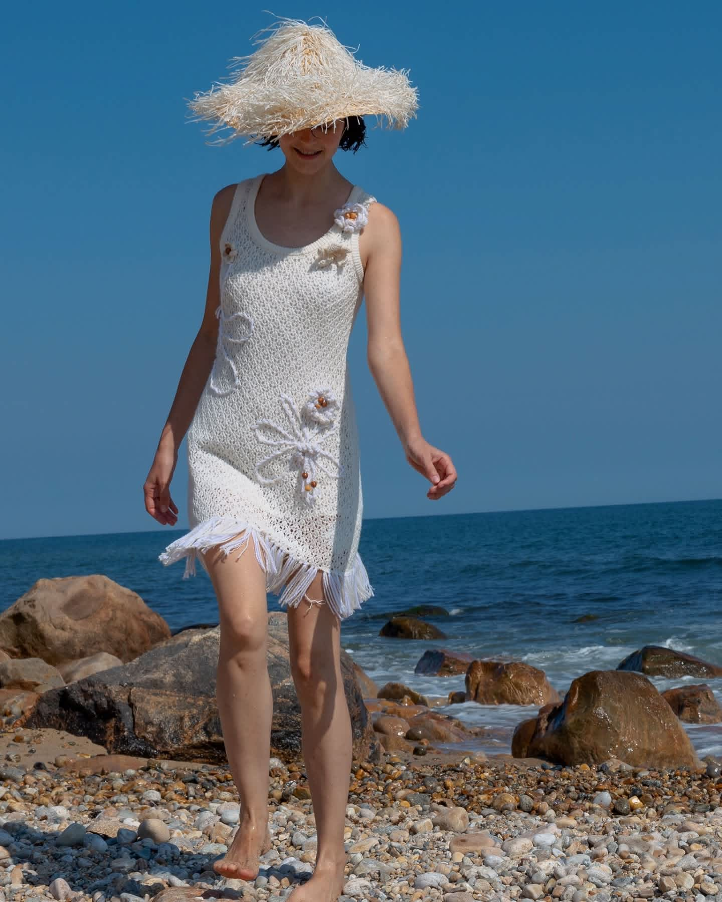
WGSN · retail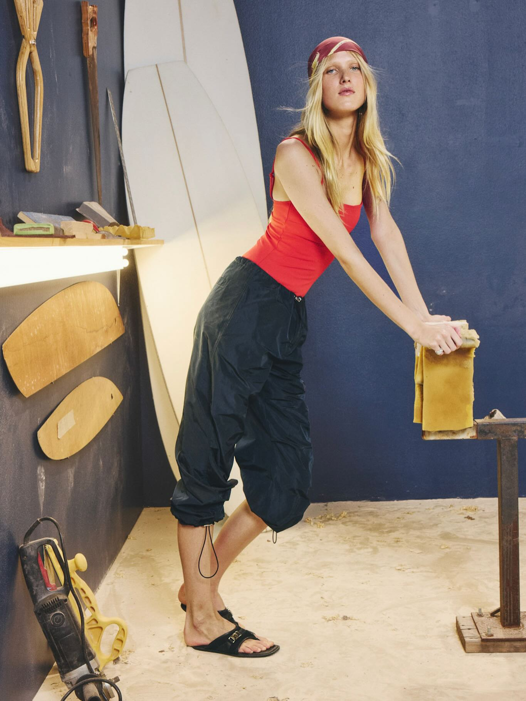
Boho's revival is a defining movement of 2026 — Bella Hadid in Chloé, plus Chloé, Zimmermann, Ulla Johnson. It has shifted to "Bold Boho": punchy mixed prints, bandana motifs, gathered fabrics, lace — more punk than pretty.
This patchwork halter is textbook Bold Boho, and analysts expect the renaissance past 2026 — matching WGSN's call that boho runs into SS27 toward "Bohemian Archive."
For 2026 the sarong sheds its beach-only reputation: luxe silk, oversized tropical prints, tied at the hip / wrapped as a halter dress / draped — styled into the city over shirts and trousers.
Crochet & fringe are core to the boho-craft revival, giving the hand-made, artisanal feel the trend now demands (and a natural elevated price tier).
WGSN flags boho as a key lifestyle trend to invest in, continuing into SS27 and evolving toward "Bohemian Archive." Eclectic Resort delivers it as dresses — mixed/scarf prints, hybrid halter/slip, sarong draping, crochet craft — for breathable, beach-to-occasion versatility.
Gathered halter / high tie-neck; spliced scarf-print panels; loose swing; handkerchief hem.
Rayon challis, 100% viscose, 100–120 gsm (fluid drape), digital + screen print.
Engineered scarf print (paisley + sun motif); tassel/fringe 60–80mm; covered button + rouleau.
Statement Red 18-1664; Carambola 14-0951; Luminous Blue 18-4148.
Wrap-and-tie sarong skirt over a sheer oversized shirt; abstract placement print; ankle length.
Viscose / habotai 90–110 gsm (sarong) + cotton chambray 90–110 gsm (shirt).
Self-tie waist knot; rolled/baby hem; contrast placement print.
Luminous Blue 18-4148 + sunset abstract print.
Lace-up V-neck; self-tie waist; billowy long sleeve; sheer A-line midi.
Poly/viscose georgette 60–80 gsm, watercolour tie-dye print (sheer).
Rouleau lace-up + tips; self-tie belt; sheer lining (slip).
Olive / cream watercolour; Earthy Brown 18-1027.
Zigzag chevron crochet; round neck; short sleeve; scalloped hem; relaxed mini (slip lining).
Cotton hand-crochet, 100% cotton, 5–7 gauge (open, textured).
Hand-crochet scallop edge; tonal/colour-block stripes; jersey slip lining.
Meadow Green 17-0220 / cream colour-block.
Open-knit scoop tank mini; 3D crochet flowers; fringed hem; beach-to-bar cover.
Cotton open knit / pointelle, 100% cotton, 5–7 gauge.
3D crochet flowers + wood beads; cotton fringe hem 80mm.
Whisper White 11-0507.
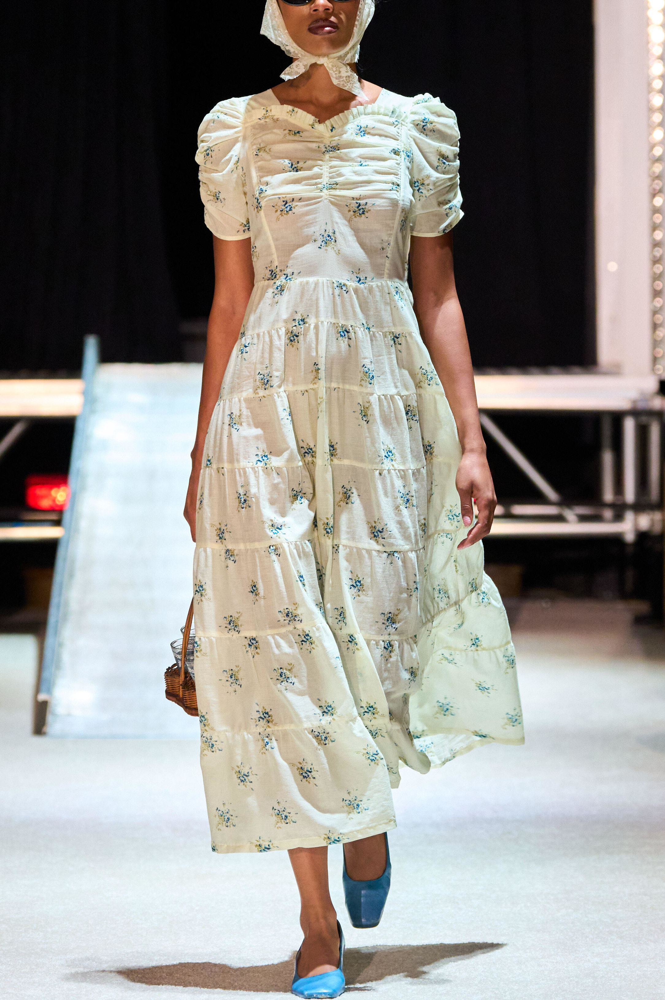
WGSN · catwalk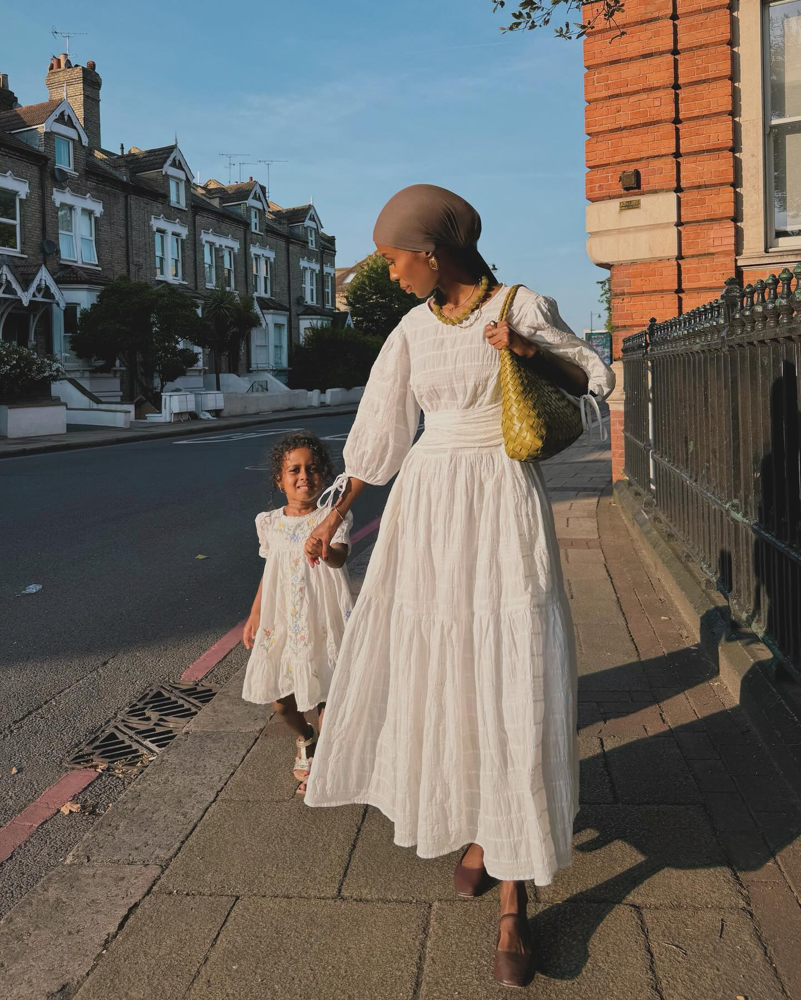
WGSN · street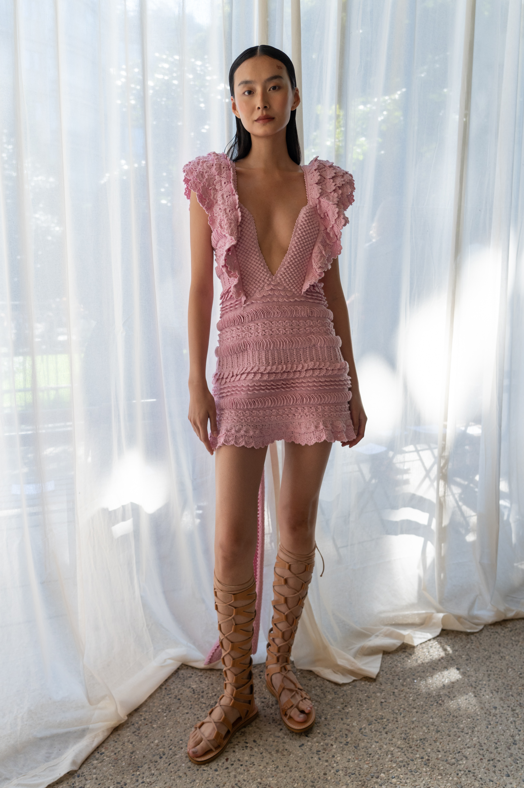
WGSN · catwalk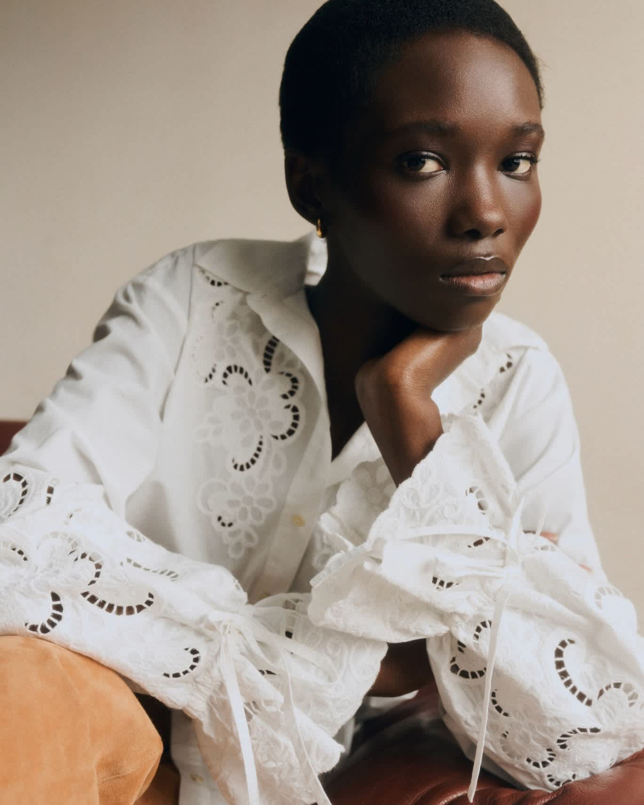
Cottagecore has matured in 2026: the midi prairie stays the cornerstone but reads "less costume-like, more refined" — high-neck, button-front, billowy sleeves, tiered skirts in lightweight cotton/linen, ditsy florals in dusty rose & sage.
Counter-signal: some retail data shows "prairie dress"/"puff-sleeve" searches down ~30% YoY as doll-like styling cedes to minimalism. Hence Expand/peak, not Invest — keep refined, grounded in garden-tone palette.
Sheer dressing is now more refined and less revealing — layered over a slip. The SS27 direction pivots to organza for subtler translucency rather than fully see-through.
Jacquemus' Spring 2027 runway showed exactly this — airy organza dresses with a gently translucent effect — validating this sheer floral drop-waist as a forward, wearable read.
The season's safe, broad-appeal romantic story — WGSN's #PrettyFeminine and Nostalgia threads (prairie, 1920s/1970s revival). Ditsy florals, sheers, lace and waist focus, executed light and airy for day-to-occasion; pairs with Restorative Comfort's "breezy beyond-the-beach" dress.
Ruched sweetheart neck; puff sleeve; tiered ditsy-floral skirt; midi.
Cotton voile / lawn, 100% cotton, 80–110 gsm, ditsy floral print.
Shirring (bodice); covered buttons; picot edge; CB zip.
Blue floral on cream; Whisper White 11-0507.
Ruffle stand collar; balloon sleeve; button placket; gathered drop-waist; sheer swing.
Poly chiffon / organza 40–60 gsm, soft-lilac floral; cotton slip lining.
Covered buttons; neck ruffle; self-tie; rolled hem.
Soft Lilac floral 15-3620.
High neck; puff sleeve; tiered skirt; wide waist sash; full coverage maxi.
Cotton dobby / seersucker, 100% cotton, 110–140 gsm (self-stripe texture).
Shirring; self sash; covered buttons; thread loops.
Whisper White 11-0507.
Deep-V; ruffle shoulders; scalloped pointelle/crochet; fitted mini (slip lining).
Cotton pointelle / crochet, 100% cotton, 5–7 gauge.
Crochet ruffle; scallop edge; picot; tonal beadwork option.
Rose Pink 15-1821 / Power Lilac 15-3620.
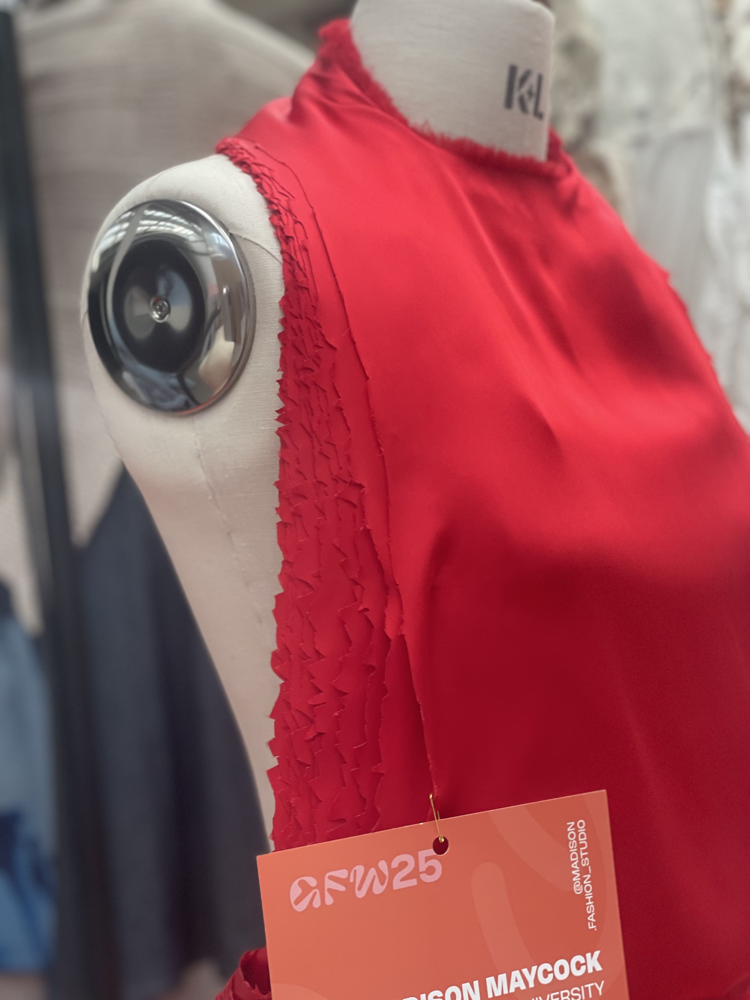
WGSN · catwalk detailDeconstruction is the dominant SS26 narrative: exposed seams, raw/frayed (déchiré) edges, flipped linings, hybrid garments — Glenn Martens a reference point. It reads as a hunger for authenticity against AI-generated perfection, with "the work of the hand" positioned as luxury.
This statement-red look — high neck, frayed raw-edge placket — sits in that craft story and pairs with dark-romance codes (sheer, boudoir lace/slip, deep reds/black).
Broderie anglaise is defining summer dressing: cutwork eyelets + raised embroidery on breathable cotton, adding light-catching dimension. Designers are sharpening silhouettes and proportion — volume on tiered/maxi, or as a trim on minimalist pieces.
It's seasonally fluid (layered under knits, with boots), supporting WGSN's cross-seasonality mandate; here cutwork + tie-cuffs double as modest, breathable coverage.
The directional, design-led bet — WGSN's BaRock and #DarkRomance threads plus the "expressive, maximalist details" mandate (lace, scalloped edges, fringing, raw edges, metallics) that justify higher price positioning. Romantic-meets-rock craft on slip/column bases, in oxblood and statement red. Test in occasion; scale the craft details across safer themes.
High neck; frayed raw-edge ruffle placket; bias slip/column base; fabric contrast.
Satin-back crepe 95/5 poly-spx, 80–110 gsm. Luxe alt: 100% silk satin 16mm (~75 gsm).
Raw-edge frayed ruffle (in-house craft); concealed zip; hand-finished hem.
Statement Red 18-1664 / Oxblood 19-1521.
Floral cutwork eyelet; scalloped openwork; tie cuffs; slip lining; day-to-occasion midi.
Cotton broderie anglaise, 100% cotton, 110–140 gsm + cotton lawn lining.
Cutwork/schiffli embroidery; scallop edge; rouleau tie cuffs.
Whisper White 11-0507 (+ oxblood colourway).
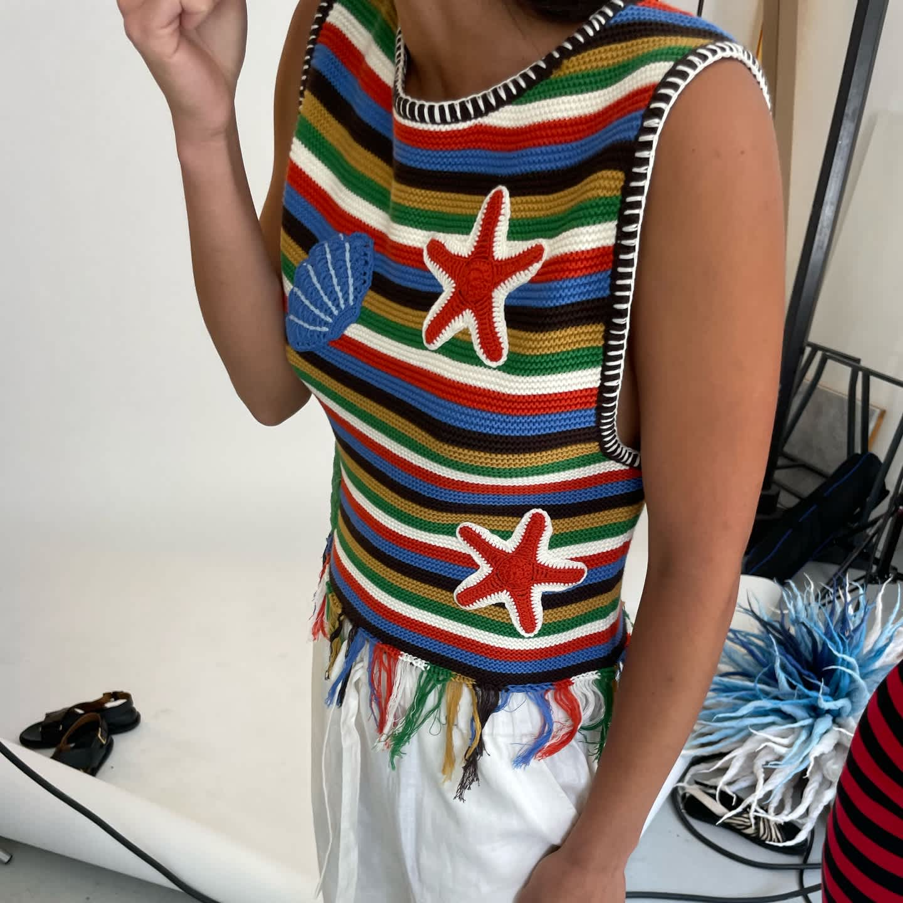
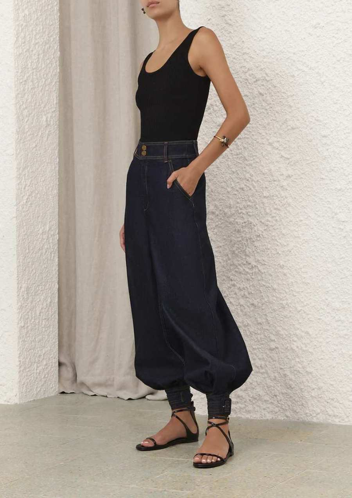
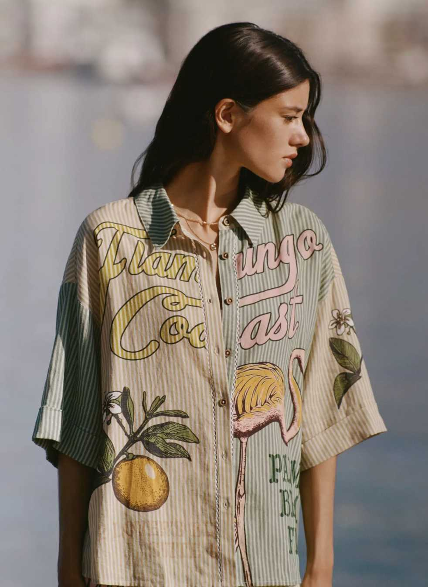
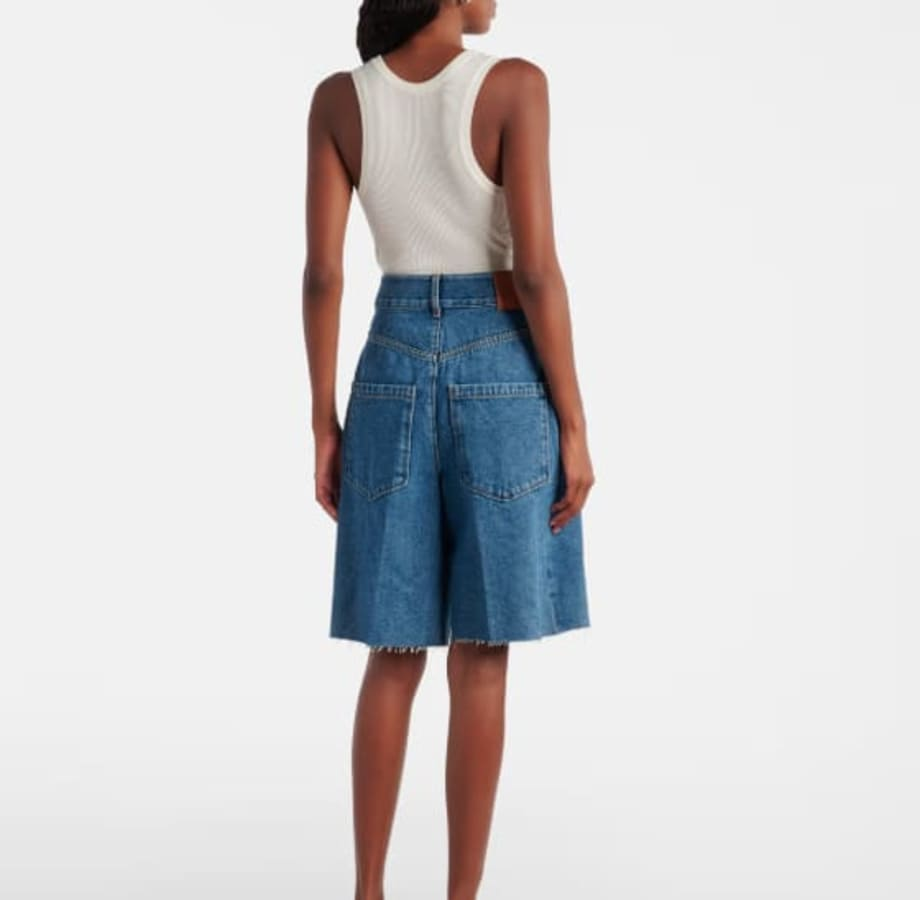
WGSN-captured non-dress key items, useful for the cross-seasonality WGSN calls for — e.g. trapeze mini as a tunic over slim trousers, or a sheer dress layered over a graphic tee (Ann Demeulemeester feed signal).
| Swatch | Colour | Pantone TCX | Hex (nearest) | Used in |
|---|---|---|---|---|
| Luminous Blue · COTY | 18-4148 | #1F5FBF | Soft Volume · Boho | |
| Statement Red | 18-1664 | #C8102E | Boho · BaRock | |
| Oxblood | 19-1521 | #5A1E2A | BaRock | |
| Meadow Green | 17-0220 | #5E8C4E | Boho · Prairie | |
| Butter Yellow | 12-0721 | #F2D479 | Soft Volume | |
| Power Pastel Lilac | 15-3620 | #C7A8DE | Soft Volume · Prairie | |
| Peach Fuzz | 13-1023 | #F4B98E | Prairie | |
| Carambola | 14-0951 | #E6A93B | Boho | |
| Earthy Brown | 18-1027 | #8A6A4F | Boho | |
| Whisper White | 11-0507 | #F2E9DC | Prairie · BaRock | |
| Rose Pink | 15-1821 | #E58FA6 | Prairie |
Nearest indicative TCX references — confirm against physical chips before lab-dip / bulk. COTY = WGSN Colour of the Year (per Buyers' Briefing).
| Fabric | Composition | GSM | Hand / finish | Region / mill | MOQ · lead | Certs |
|---|---|---|---|---|---|---|
| Cotton voile | 100% cotton | 90–110 | Crisp, dry, airy | Surat greige → Tirupur dye | ~500m · 30–40d | BCI, OEKO-TEX |
| Cotton poplin | 100% cotton | 110–130 | Smooth, structured | Tirupur / Erode | ~500m · 30d | BCI, OEKO-TEX |
| Cotton lawn | 100% cotton | 80–100 | Fine, soft | Surat / Tirupur | ~500m · 30d | BCI |
| Cotton dobby / seersucker | 100% cotton | 110–140 | Self-stripe texture | Erode / Surat | ~500m · 35d | BCI |
| Rayon challis | 100% viscose | 100–120 | Fluid drape | Surat (digital + rotary) | 50–100m digital / 300m rotary · 35d | EcoVero opt |
| Modal-viscose | 50/50 modal-viscose | 110–130 | Silky, cool | Surat / China | ~800m · 40d | EcoVero / GRS |
| Viscose / habotai | 100% viscose | 90–110 | Light, fluid (sarong) | Surat | ~500m · 35d | EcoVero opt |
| Poly georgette | 100% polyester | 60–80 | Floaty, sheer-ish | Surat | ~500m · 30d | GRS opt |
| Poly chiffon | 100% polyester | 40–60 | Sheer, floaty | Surat | ~500m · 30d | GRS opt |
| Organza | 100% poly / nylon | 40–60 | Crisp sheer | Surat / China | ~500m · 35d | — |
| Satin-back crepe | 95/5 poly-spandex | 80–110 | Liquid, matte-shine | Surat | ~600m · 30–40d | OEKO-TEX |
| Silk satin (charmeuse) | 100% silk, 16mm | ~75 | Liquid lustre (luxe) | Bangalore / China | ~300m · 45d | — |
| Cotton broderie anglaise | 100% cotton | 110–140 | Eyelet cutwork | Surat / China embroidery | ~300m/design · 40d | OEKO-TEX |
| Corded / Chantilly lace | nylon / cotton | 60–120 | Fine openwork | China / Première Vision | ~300m · 45d | — |
| Cotton crochet / pointelle | 100% cotton | 5–7 gauge | Open, hand-textured | Tirupur (handwork) | 300–500 pc · 45–60d | BCI, handloom |
| Ribbed knit | cotton / elastane | 180–220 | Soft stretch rib | Tirupur | ~500 pc · 35d | BCI |
GSM, MOQ & lead-time are indicative design direction for costing conversations — confirm with sourcing/vendors. India-first (Surat prints & sheers · Tirupur knits/crochet · Erode/Ludhiana wovens · Bangalore silks), with China / Première Vision for novelty lace.
| Trim | Type / spec | Placement | Region / source | MOQ |
|---|---|---|---|---|
| Placement embroidery | Multi-needle schiffli, 2–3 col | Neckline → hem border | Surat (Pandesara) / Bareilly | 300–500 pc |
| Cutwork / broderie | Schiffli cutwork eyelet | All-over / panel | Surat / China | 300m / design |
| 3D floral appliqué | Organza / crochet petals + bead | Bodice / shoulder | Surat handwork / Tirupur | ~300 pc |
| Hand-crochet panels | 5–7 gauge, scallop edge | Full garment / trim | Tirupur handwork | 300–500 pc |
| Tassel / fringe | Cotton / rayon, 60–80mm | Hem / tie ends | Ludhiana handwork | ~500m |
| Scalloped lace / picot edge | Cotton, narrow | Neck / sleeve / hem | Surat / China | ~500m |
| Raw-edge / frayed ruffle | Self-fabric, hand-finished | Placket / hem | In-house craft | — |
| Sunray / permanent pleating | Heat-set on poly | Skirt / panel | Surat pleaters | per panel |
| Shirring / smocking | Elastic shirring | Bodice / waist / cuff | In-house | — |
| Covered buttons + rouleau | Self-fabric | CB / front placket | In-house / Delhi | gross |
| Self-tie belt / sash | Self-fabric | Waist | In-house | — |
| Metallic scroll belt | Zamak / brass casting | Waist (statement) | Delhi / Moradabad hardware | ~500 pc |
| Lettuce / merrow edge | Merrow overlock | Hem / sleeve (knit) | Tirupur | — |
| Invisible zip | YKK 56cm | CB | YKK India | std |
Trim direction for the four themes — placement embroidery, cutwork, crochet, fringe, raw-edge and metallics are the season's elevation levers (WGSN: maximalist details support higher price positioning).